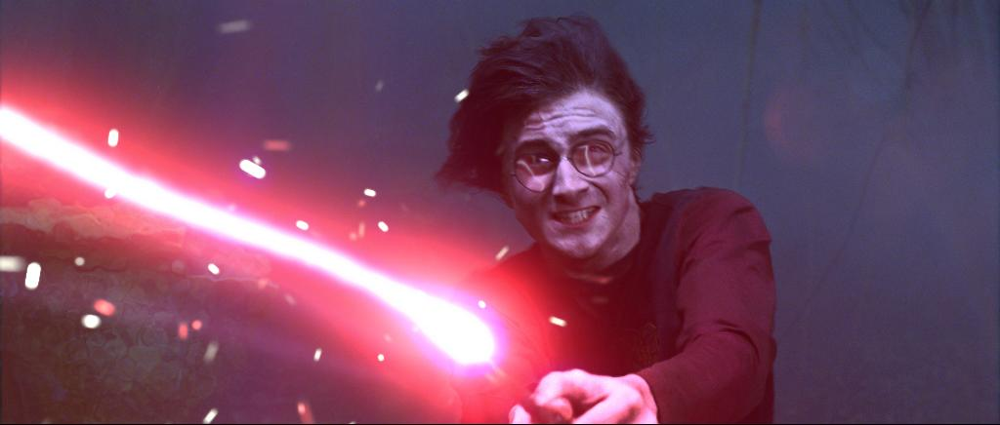

List Of Spells, Charms and Curses
Accio :-
Type - Charm
The Summoning Charm (Accio) was a charm that summoned an object toward the caster. It was able to summon objects in direct line of sight of the caster, as well as things out of view, by calling the object aloud after the incantation (unless the spell was cast nonverbally).
Aguamenti :-
Type - Charm
The Water-Making Spell, also known as the Aguamenti Charm (Aguamenti) was a charm that conjured a jet of clean, drinkable water from the tip of the caster's wand. This spell, in addition to being a charm, can also be classified as conjuration, an advanced form of Transfiguration.
Arresto Momentum :-
Type - Charm
The Slowing Charm (Arresto Momentum) was a charm that could be used to slow the velocity of an object. It was taught in second-year and fifth-year Charms class at Hogwarts School of Witchcraft and Wizardry.
Avada Kedavra :-
Type - Curse

The Killing Curse (Avada Kedavra) was a tool of the Dark Arts and was one of the three Unforgivable Curses. When cast successfully on a living person or creature, the curse caused instantaneous and painless death, without causing any injury to the body, and without any trace of violence. The Killing Curse was accompanied by a blinding flash or jet of green light and a distinctive rushing sound when being cast.
Alohomora :-
Type - Charm
The Unlocking Charm (Alohomora), also known as the Thief's Friend, was a charm that unlocked objects such as doors or windows. It was also able to open doors locked by the Locking Spell (Colloportus), and as such, acted as its counter-charm. The Anti-Alohomora Charm could be used to prevent this charm from working on a locked target.
Ascendio :-
Type - Charm
Ascendio is a charm used to lift the caster high into the air or propel them to the surface, they should be underwater at the time. Harry Potter uses this charm/spell in the second task of the Tri-Wizard Tournament in Februaryof 1995 in the Goblet of Fire.
Bombardo :-
Type - Charm
The Exploding Charm (Bombarda) was a charm that detonated the target in a small explosion. One use for this explosion was to blast open sealed doors or to blow bars off of windows. The incantation Bombarda Maxima was a stronger, more powerful variation of this spell.
Confundo :-
Type - Charm
The Confundus Charm (Confundo) was a charm which confused and misdirected the target. It worked on living and inanimate things, as long as the target had a mind to be confused.
Crucio :-
Type - Curse
The Cruciatus Curse[1] (Crucio),[1] also known as the Torture Curse,[5] was a tool of the Dark Arts and one of the three Unforgivable Curses. It was one of the most powerful and sinister spells known to Wizardkind. When cast successfully on a fellow human being or living creature, the curse inflicted intense, excruciating physical pain on the victim, and would result in insanity if the victim was subjected to it for a prolonged time.
Diffindo :-
Type - Charm
The Severing Charm (Diffindo) was a charm used to precisely and accurately cut something. If used inappropriately, it could cause death or injury.
Expecto Patronum :-
Type - Charm

The Patronus Charm is a powerful projection of hope and happiness that drives away Dementors; a corpeal Patronus takes the the respective animal form of the caster, while a non-corpeal appears as a wisp of light; at 13, Harry Potter was the youngest known witch or wizard to prouduce a corpeal Patronus
Expelliarmus :-
Type - Charm

The Disarming Charm (Expelliarmus) was a charm that forced whatever an opponent was holding to fly out of their hand. It was common to see this spell used in duels to make an opponent lose their wand.
Immobulus :-
Type - Charm
The Freezing Charm (Immobulus) was a charm which immobilised and stopped the actions of the target. With the use of this charm, the movement of living or animated targets was stopped, and the functioning of objects such as Muggle burglar alarms was halted.
Imperio :-
Type - Curse
The Imperius Curse is one of the three Unforgivable Curses. When cast successfully, it places the victim completely under the caster's control, though a person with exceptional strength of will is capable of resisting it.
Incendio :-
Type - Charm
The Fire-Making Spell, also known as the Fire-Making Charm (Incendio) was a charm that conjured a jet of flames that could be used to set things alight.
Lumos :-
Type - Charm
The Wand-Lighting Charm (Lumos) was a charm that illuminated the tip of the caster's wand, allowing the caster to see in the dark. The counter-charm for the spell was the Wand-Extinguishing Charm (Nox), which was used to extinguish the light from the caster's wand.
Nox :-
Type - Charm
The Wand-Extinguishing Charm (Nox) was a charm that caused the light at the end of the caster's wand to be extinguished, thus acting as the counter-charm to the Wand-Lighting Charm (Lumos).
Obliviate :-
Type - Charm
Obliviate is a Memory Charm that is also known as the Forgetfulness Charm, which is used to remove the memories of an individual's mind. This spell was heartbreakingly used by Hermione Granger on her parents during the Second Wizard War.
Occulus Repero :-
Type - Charm
Oculus Reparo was the incantation of a charm that repaired broken eyeglasses. It was a variant of the Mending Charm.
Petrificus Totalus :-
Type - Curse
The Full Body-Bind Curse (Petrificus Totalus), also known as the Body Freezing Spell, was a curse that temporarily paralysed the opponent. It was often used by inexperienced or young wizards and witches in duelling. This curse could be found in Curses and Counter-Curses by Vindictus Viridian.
Protego :-
Type - Charm
The Shield Charm (Protego) was a charm that protected the caster with an invisible shield that reflected spells and blocked physical entities. It was apart of the Defence Against the Dark Arts curriculum and was taught to sixth years at Hogwarts School of Witchcraft and Wizardry. There were also multiple variations of the Shield Charm.
Reducto :-
Type - Curse
The Reductor Curse (Reducto) was a curse that blasted solid objects to pieces. It was rather easy to reduce a target to a fine mist or a pile of ashes. Harry Potter taught this curse to Dumbledore's Army during the 1995–1996 school year.
Rictumsempra :-
Type - Charm
The Tickling Charm (Rictusempra) was a charm that caused the target to buckle with laughter, weakening them. It also had at least one other side effect.
Riddikulus :-
Type - Charm
Riddikulus is a charm that is used in defence against a Boggart. It causes the creature to assume a form that is humorous to the caster, thereby counteracting the Boggart's ability to terrorise. Boggarts are defeated by laughter, so forcing them to assume an amusing form is the first step to defeating them.
Sectumsempra :-
Type - Curse
Sectumsempra was a curse invented by Professor Severus Snape that lacerates the target and causes severe haemorrhaging. Snape created it as a student of Hogwarts, with the intention of using it against his enemies, likely including the Marauders, and it became one of his specialities.
Serpensortia :-
Type - Charm
The Snake Summons Spell (Serpensortia) was a transfiguration spell that conjured a live snake from the end of the wand. Out of all of the spells used to conjure living things, The Snake Summons Spell was amongst the easiest, alongside the Bird-Conjuring Charm. The counter-spell to this conjuration was the Snake-Vanishing Spell.
Stupefy :-
Type - Charm
The Stunning Spell (Stupefy), also known as the Stupefying Charm, or Stunner for short, was a charm that stunned the target, rendering them unconscious. This charm was exceptionally useful in duelling, as it can quickly end a duel without causing lasting damage. The spell also had the ability to halt moving objects.
Wingardium Leviosa :-
Type - Charm
The Levitation Charm is one of the first spells learnt by any young witch or wizard. With the charm a witch or wizard can make things fly with the flick of a wand. The charm is an excellent test of your magical skills, wand control and above all, patience